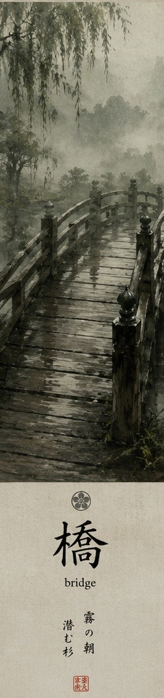

はし。
hashi.

Beginner pathway
Look into the picture.
Look
Look into the scene.

はし。
hashi.

ぬれた はし。
nureta hashi.
ぬれた はしに。
nureta hashi ni.
に
ni
はし you can already write. に is new.
に joins because はしに needed it. 24 of 46 is not unfinished work.
Look into the picture.
濡れた橋に
灯りが続く
You can already see some of it.